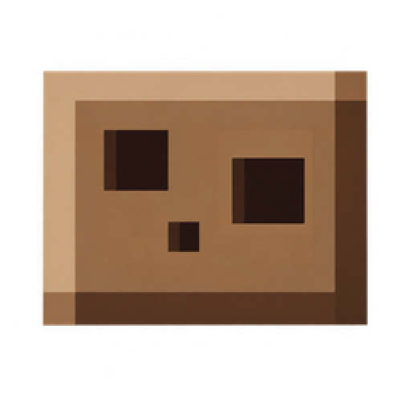

Velin
By Brhenja
¿Qué es Velin?
Un launcher de Minecraft Java para Windows: liviano, con muy bajo consumo de recursos y muchas funciones útiles.
Cada instancia tiene su propia carpeta, Java se descarga solo, funciona con Fabric, Forge, Quilt y NeoForge, y podés buscar mods, modpacks, resource packs y shaders de Modrinth y CurseForge sin salir del launcher.
Descargas
Versión 1.0.0 para Windows 10 u 11 de 64 bits. El instalador no está firmado, así que Windows puede mostrar un aviso: elegí «Más información» y después «Ejecutar de todas formas».
Velin no es un producto oficial de Minecraft ni está afiliado a Mojang o Microsoft.
Review del launcher
Dudas y errores
- Discordbrhenja.
- Gmailbrhenja@gmail.com